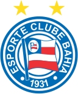

Sport Club Corinthians Paulista, comumente referido como Corinthians, ou ainda pelo seu acrônimo SCCP, é um clube poliesportivo brasileiro da cidade de São Paulo, capital do estado de São Paulo.
| Adversário | Local | Data | Horário | |
|---|---|---|---|---|
| Imagem | Nome | |||
 |
Bahia | Itaquera | 16/08/2025 | 21:00 |
 |
Vasco | Rio de Janeiro | 24/08/2025 | 16:00 |
| Atletico Paranaense | Curitiba | 27/08/2025 | 21:30 | |